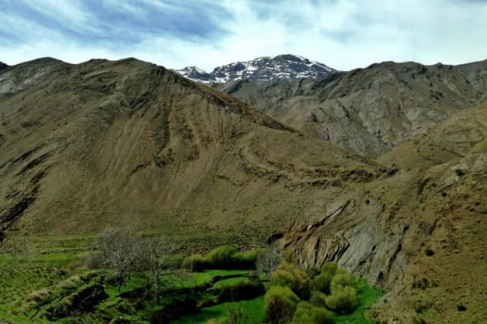

Excursion Les 3 vallées dans l'Atlas au départ de Marrakech
Un circuit d’une journée pour découvrir les plus belles vallées du sud de Marrakech ; Ourika, val d’Asni, plateau de Kik et le lac de Lalla Takerkoust.

Excursion Les 3 vallées dans l'Atlas au départ de Marrakech depuis Marrakech
- Excursion aux Trois Vallées en 1 jour
Détails de l'excursion
Trajet : 170 Km ( 2 h de route )
Programme de l’excursion :
Départ depuis votre hôtel à 08 h.
Balade au bord du Barrage de Lalla Takerkoust.
Passage par le plateau de Kik.
Passage par le val d’Asni
Tahanaout
Ourika
Possibilité de visiter une pharmacie berbère.
Retour à Marrakech à 17 h.
Prix inclut : Transport en privé, assurances des passagers et frais du chauffeur.
Prix n’inclut pas : Repas, boissons et activités en extra.
N.B: Si votre hébergement est situé à plus de 15 km du centre de Marrakech veuillez prévoir un supplément pour la mise en place du transport à votre adresse
| Véhicule | Tarif |
|---|---|
| Minibus 04 places | 120 Euro |
| Minibus 07 places | 135 Euro |
| Minibus 14 places | 170 Euro |
| Minibus 17 places | 185 Euro |
| Autocar 29 places | ND |
| Autocar 48 places | ND |
Assurance des passagers et frais du chauffeur compris. ND : véhicule non proposé sur cette formule.
RéserverTrajet Les 3 vallées dans l'Atlas au départ de Marrakech
Excursion Les 3 vallées dans l'Atlas au départ de Marrakech
L’ excursion vers les trois vallées au départ de Marrakech se déroule en trois étapes toutes belles et attrayantes:
1ère étape : La vallée de l’Ourika et ses 7 cascades située à une heure de route de Marrakech offrant un beau paysage connu par son oued et ses 7 belles cascades.
2ème étape : Le Val d’ Asni dominé par les montagnes de l’atlas avec un arrêt à Asni, Tahanaout et Moulay Brahim avant de prendre une descente par le plateau de Kik et arriver à l’étape suivante.
3ème étape : Le lac de Lalla Takerkoust , sur-place vous pouvez pratiquer divers activités tel le quad, le jet-ski, le pédalo ou tout simplement vous balader au bord du barrage et admirer un couché de soleil magnifique.
Excursion aux trois vallées en détails
Excursion vallée de l’Ourika
· Après 30 km de route vers le sud de Marrakech, les montagnes de l’atlas commencent à s’imposer sur l’horizon, un mélange de couleurs vertes et marrons-terre vous emportera dans un autre monde totalement différent de la foule de Marrakech vous permettant de découvrir un paysage naturel et très plaisant.
· Sur-place notre chauffeur vous proposera des beaux endroits dignes de carte-postale où vous pouvez vous promener sereinement, prendre des photos ou vous balader à dos de mulets, au bord de la rivière les habitants vous inviteront à choisir leurs petits restaurants proposant des tajines berbères avec une belle vue sur la montagne et la vallée.
Excursion Asni
· Après votre balade dans la vallée de l’Ourika et son village Setti-Fatma notre chauffeur vous conduira entre les montagnes de l’Atlas pour rejoindre le village d’Asni, sur cette route vous aurez l’occasion de découvrir des paysages panoramiques qu’offre le val d’Asni, avec le mont Toubkal comme en arrière-plan et les prairies verdoyantes au pied de l’Atlas vous serez éblouis par la magie de ce coin unique.
· Après avoir dépassé la petite ville d’Asni le chemin vers la troisième étape de votre excursion vous conduira à un village montagnard typique nommé « Moulay Brahim » où vous pouvez marquer une petite pause avant de continuer votre route vers le plateau de Kik.
Excursion plateau de Kik et lac Lalla Takerkoust
· Excursion au plateau de Kik
C’est une zone désertique située au sud de Marrakech reliant Asni au barrage de Lalla takerousot à travers l’Atlas, un endroit du Maroc profond hors temps offrant une vue panoramique sur la plaine du lac.
· Excursion au lac de Lalla Takerkoust
Situé à 40 km de Marrakech le lac Lalla Takerkoust est l’endroit idéal pour pratiquer divers activités aquatiques et tout terrain, plusieurs prestataires s’y sont installés durant la dernière décennie pour proposer aux amateurs d’activités sportives des journées quads, buggy ou jet-ski..
Sur-place vous pouvez passer un moment agréable dans un restaurant au bord du lac et admirer le soleil se couchant derrière les montagnes de l’Atlas.
Nous vous garantissons
- Un véhicule récent et climatisé à votre disposition en exclusivité
- Départ et retour à votre hôtel gratuitement dans un rayon de 15 km
- Liberté de modifier ou décaler les horaires du départ et de fin de votre balade
- Possibilité de personnaliser l'itinéraire de l'excursion et les sites à visiter
- Trans Marrakech vous garantie les prix les moins chers